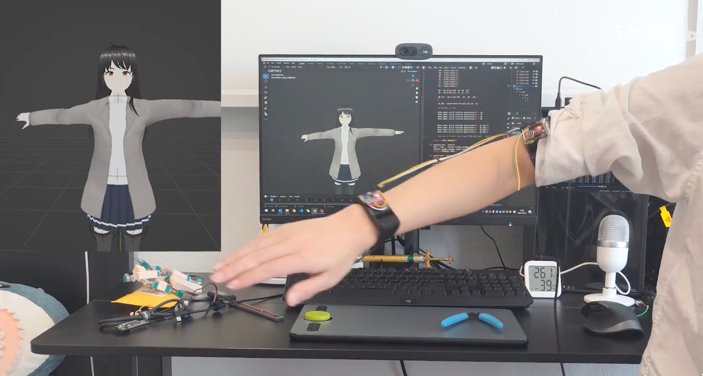
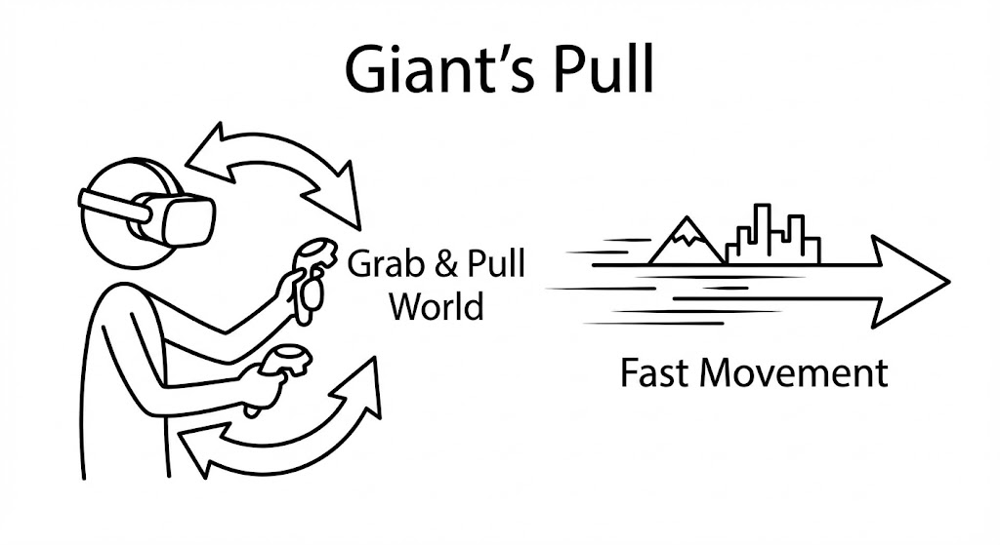
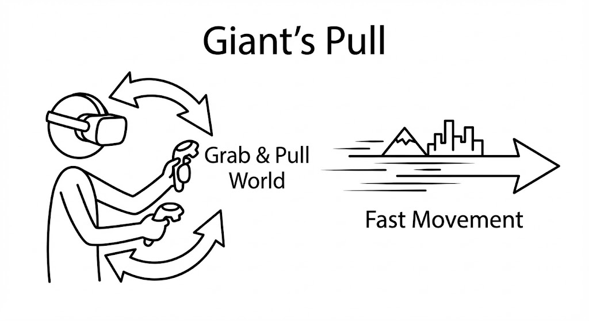

In this assignment, I explored three different VR movement technologies, understanding their goals, principles, and evaluation methods.
Concept 1: Arm Swing “Power Glide”
-
Goal: Enhance immersion and fun, balancing exercise intensity and comfort.
-
How it works:
- Interaction metaphor: Mimics real-world walking by generating movement through arm swinging.
- System Logic: Implemented in Unity. It detects the speed of the left and right controllers (swing power) and uses the trigger buttons and a threshold to determine movement. Speed is controlled using a curve to fit the parkour environment.
-
Evaluation:
- Compare with traditional joystick movement.
- Metrics: Record time to complete the route, accuracy of collecting coins, and fun rating (1-10). 
Concept 2: Nod-to-Zoom Teleportation
-
Goal: Provide a stable, low-motion sickness risk movement option for users with limited mobility.
-
How it works:
- Interaction metaphor: Uses gaze and physical nods as confirmation.
- System Logic: Tracks the user’s eye movement via the head-mounted display (HMD) to detect slight “nodding” (up/down movement) which triggers instant teleportation.
-
Evaluation:
- Metrics: Use the Simulator Sickness Questionnaire (SSQ) to evaluate the effect on motion sickness (1-10).
https://www.youtube.com/watch?v=ulcNfCbkX4s


Concept 3: Elastic Slingshot / Grappling Hook
-
Goal: Achieve high vertical maneuverability and entertainment immersion. The goal is to allow users to quickly and precisely reach floating platforms in a parkour-like environment.
-
How it works:
- Point and Lock: Users aim the controller at a target (such as a platform) and press the trigger to launch an energy beam (raycast) to hook the target.
- Physical Stretch: A visible elastic line forms between the controller and the target.
- Power Trigger: Users pull the controller towards themselves, and the system calculates a forward force based on the controller’s displacement and speed, launching the player towards the target.
-
Evaluation:
-
Comparison: Compare with traditional “teleportation” technology.
-
Metrics:
- Direction accuracy.
- Immersion rating: A survey to assess the sense of being immersed in the environment (1-10).
-

 
